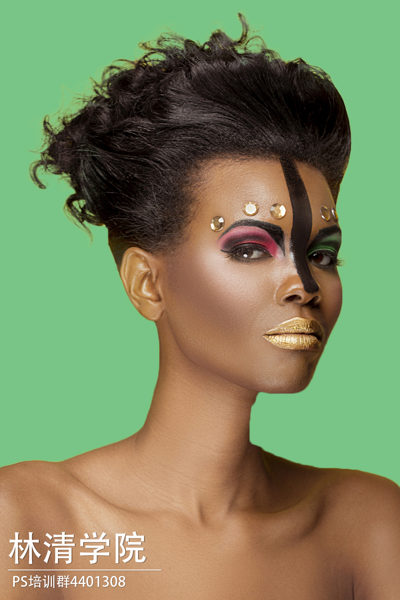
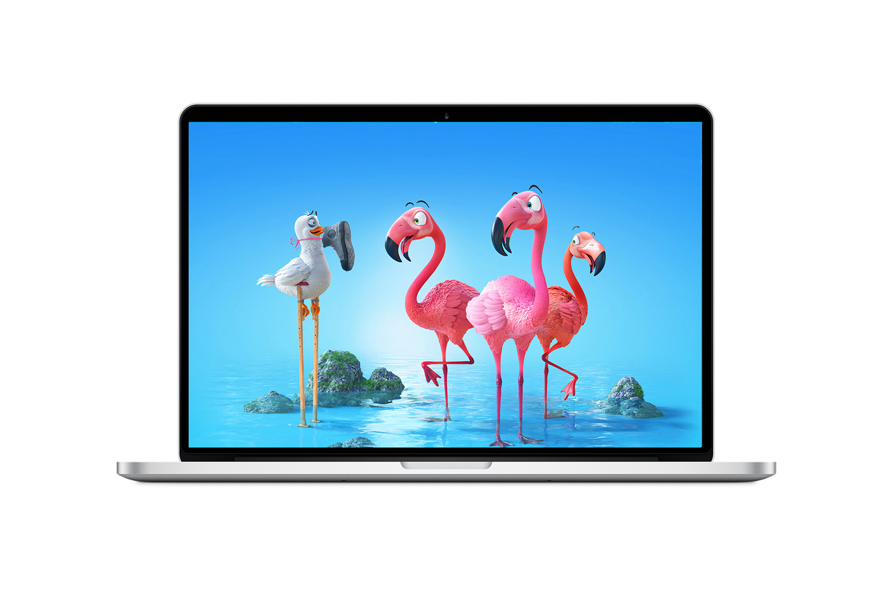
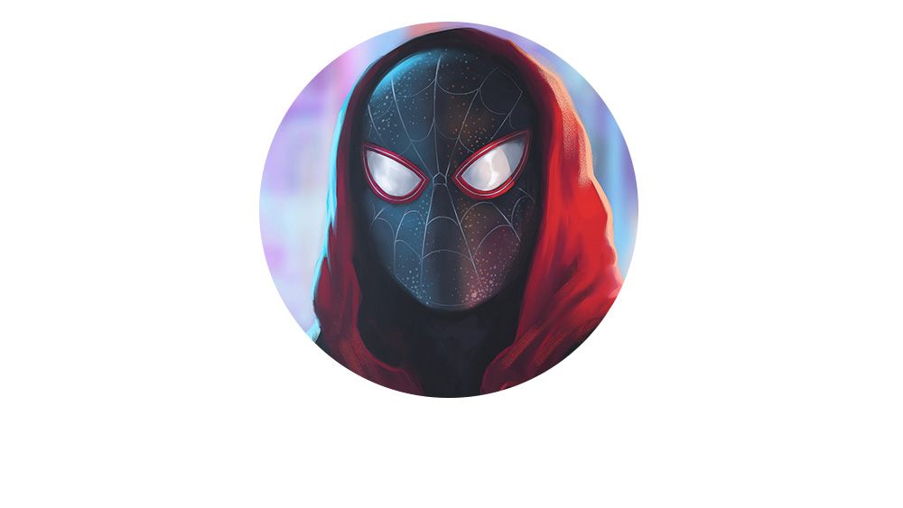
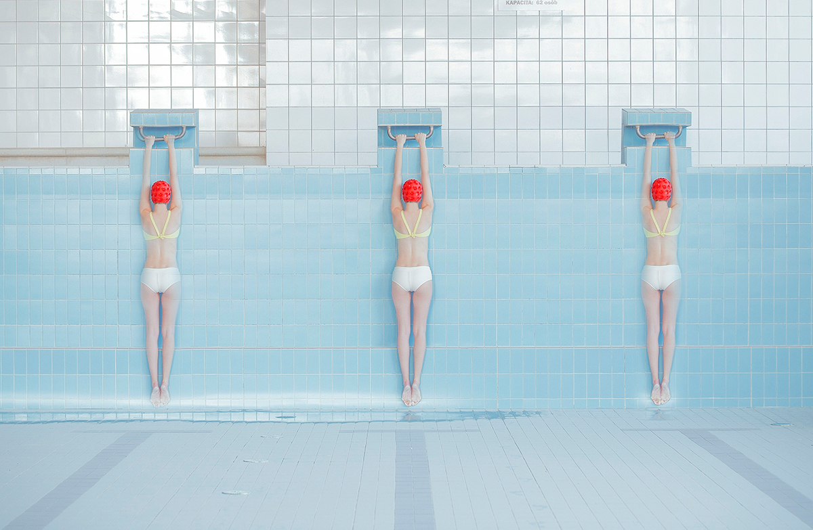

PS2019工具
一.L4 移动工具
1.调整文本框
cmd+T
2.文字外发光
图层样式
3.移动工具
没选中自动选择,要先选中图层,才能移动
选中自动选择,会自动选择图层
鼠标放在目标周围外边一点就会出现旋转指示
一般不选中显示变换控件,用cmd+T
4.Option点击眼睛只看某一图层
5.图层可以编组CMD+G
6.历史记录 可以撤回
7.图层锁定,剪切会填充背景色
二.L5 矩形选择工具
8.矩形选择
选中区域,右键,通过拷贝的图层,可以创建选区的新图层 CMD+J
Shift 加选区
Option,减选区
Option+Shift 交叉选区
羽化可以让粘贴更顺滑
变换选区,可以调节
Option+Del 填充前景颜色
Ctrl+Del 填充背景色
填充前,先创建新图层
如果是白色就是透明,填充没效果
椭圆选择,可以Shift选正圆
单行选框工具-可以用来画线 一个像素
三.L6 套索选择工具
9.套索选择
羽化可以先设置,也可以建选区后右键羽化
大概选区可以用
多边形套索-画直边
磁性套索工具-自动识别颜色,可以画曲线
磁性套索可以按Option,变成多边形套索
10.Option+滚轮 放大缩小
11.选择过程中,按住空格键,可以移动
四.L7快速选择和魔棒
12.选中并遮住
a.平滑
b.移动边缘
c.调整边缘画笔 可以自动计算边缘颜色 如毛发能去掉多余的颜色

13.魔棒工具
a.选中颜色相似的区域 背景颜色比较单一
b.可以更换工具
五.L8裁剪和切片
14.裁剪
a.双击确定
b.也可以增加区域
c.CTRL新建图层在当前层下面
d.拉直 拉一条直线
e.内容识别 添加区域自动识别
f.透视裁剪工具
h.切片工具 视图-清除切片
i.标尺 CMD+R 拖标尺做参考线 基于参考线的切片
j.保存为Web,
i.选择切片 CTRL + 点击 合并切片
l.右键,编辑切片,加链接
m.视图 清除参考线 CTRL-H 暂时隐藏参考线
n.视图 新建参考线 可以输入像素
六.L9剪贴蒙版 图框工具
15.剪贴蒙版
a.右击上面的图层-创建剪贴蒙版 按下面的图层区域显示
b.圆,文字 可以做显示区域
c.笔记本电脑 选择屏幕部分 新建图层 置入图片 添加剪贴蒙版
d.Option 在两个图层之间点击

16.图框工具
d.图框工具 双击切换选择对象 有圆和矩形两种

七.L10吸管工具组
17.吸管
a.吸取颜色 一般选所有图层 可以显示取样环
b.颜色取样工具 会显示颜色值 可以按Option删除 也可以清除全部
c.标尺工具 测L1长度 首选项设置单位 按住Option 可以测L2 和 角度
d.测量比例 图像 分析 设置测量比例 自定义
e.拉直图层 灰色
f.注释工具 可以清除 和 隐藏
g.计数工具 可以标记计数 可以隐藏 文件夹可以新建组
八.L11污点修复工具组
18.污点修复工具
a.按住Option 右键 可以调节工具圆的大小
b.硬度调0 一般选内容识别 对所有图层取样
c.要先创建一个新图层 用来去除污点
d.不会保留纹理 有替换 有创建纹理 近似匹配
19.修复画笔工具
a.所有图层 Option点击 取样 再去覆盖污点 对齐就会一直围绕中心绘制
20.修补工具
a.选区域 然后移动到指定区域替换 纹理较好保存 不能在空图层修补 复制图层
b.选目标是选区域 移动到斑点上
21.内容感知移动工具
a.选取 移动 原来的位置会自动生成过渡图像 在新位置也会匹配新颜色
b.结构越低,羽化越好,更能融合 颜色越高 变化越大
c.扩展,原来的还在 就是复制过去
d.投影时变换 选中 可以做些变换
e.红眼 基本用不到
九.L12强大的画笔工具
22.画笔
a.画笔预设 间距 角度 笔尖形状 形状动态 散布 纹理 载入
b.硬度 硬度小圆的周围虚化变淡 不透明度 流量 用鼠标相当于不透明度 不调节
c.蝴蝶 垂直对称画图
d.纹理和双重画笔不好使
e. 画笔预设:双重画笔 颜色动态 色相抖动 饱和度 亮度 纯度
f.传递 不好使 不透明度
g.画笔笔势
h.复位工具
23.铅笔
a.铅笔硬度没有虚边效果 画笔100硬度也有虚边
b.自动涂抹 在前景色上画就会画背景色
24.颜色替换工具
a.替换为前景色 背景色取样 色相饱和度明度混合模式 容差
b.混合器画笔 干燥湿润
十.L13仿制图章工具
25.仿制图章
a.复制 硬度 0 更融合 对齐 每次就涂一个 所有图层 可以取样可见的图像
b.复制一个图层来复制
c.仿制源,可以记录多次复制
d.可以用来复制好的图来覆盖污点
e.图案图章工具
